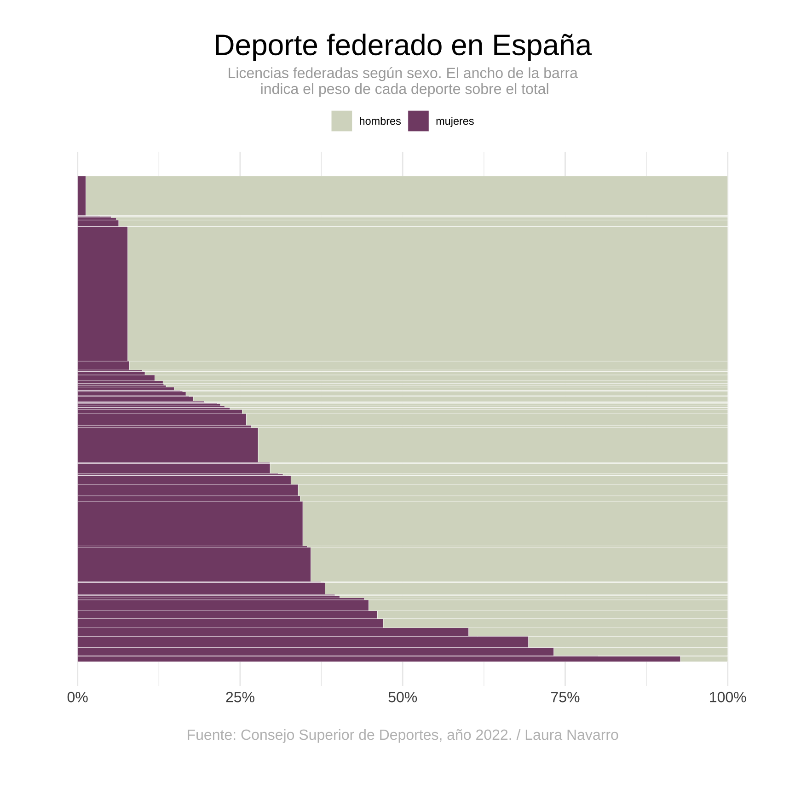

Related chart types

Chord diagram

Network

Sankey

Arc diagram

Edge bundling
This post demonstrates how to visualize the gender distribution in sports in Spain using an interactive Mekko chart. The chart uses data from the Consejo Superior de Deportes (2022) and illustrates how sports licenses are distributed among men and women across different sports categories.
It has been created by Laura Navarro. Thanks to her for sharing this beautiful chart!
To create this chart, we use several R packages:
tidyverse for data manipulationshowtext for custom fontsggiraph for adding interactivity to the ggplot-based
Mekko chartTo enhance the visual appeal, we use Google Fonts. The
showtext package allows us to easily include and use these
fonts in our plots.
The dataset is loaded directly from a GitHub repository, and it contains information about the number of federated sports licenses held by men and women in different sports.
The data is prepared by calculating the percentage difference between the number of men and women holding federated licenses in each sport. The data is then reshaped into a long format for easier plotting.
# Data wrangling
fedes_clean <- fedes %>%
mutate(diferencia = ((mujeres / total) * 100) - ((hombres / total) * 100)) %>%
pivot_longer(cols = c("hombres", "mujeres"), names_to = "sexo", values_to = "federados") %>%
mutate(proporcion = federados / total)
# Convert sport names to title case
fedes_clean$deporte <- str_to_sentence(fedes_clean$deporte, locale = "es")The Mekko chart is created by defining the dimensions of each rectangle to represent different sports and the distribution of licenses between men and women.
# Create rectangles for Mekko chart
fedes_mosaic <- fedes_clean %>%
group_by(deporte) %>%
mutate(
prop_federados = federados / sum(federados),
tot_group = sum(federados)
) %>%
ungroup() %>%
arrange(diferencia)
fedes_mosaic2 <- fedes_mosaic %>%
group_by(sexo) %>%
arrange(desc(diferencia)) %>%
mutate(
ymax = cumsum(tot_group) / sum(tot_group),
ymin = (ymax - (tot_group / sum(tot_group)))
) %>%
ungroup() %>%
group_by(deporte) %>%
arrange(desc(sexo)) %>%
mutate(
xmax = cumsum(prop_federados),
xmin = xmax - prop_federados,
data_id = paste0(deporte, sexo), # For interactivity
tooltip = paste0(
"<b>", as.character(deporte), "</b>", "<br>",
sexo, ": ", "<b>", round(proporcion * 100, 1), "</b>", "%<br>",
"Total federados/as: ", federados, "<br>"
)
)The ggplot2 package is used to create the Mekko chart,
and ggiraph is used to add interactive tooltips.
# Plotting the chart
p1 <- ggplot(fedes_mosaic2) +
geom_rect_interactive(aes(
ymin = ymin, ymax = ymax, xmin = xmin, xmax = xmax, fill = sexo,
data_id = data_id, tooltip = tooltip
), colour = "white", size = 0.1) +
labs(
fill = NULL, colour = NULL,
title = "Deporte federado en España",
subtitle = "Licencias federadas según sexo. El ancho de la barra\n indica el peso de cada deporte sobre el total",
caption = "Fuente: Consejo Superior de Deportes, año 2022. / Laura Navarro"
) +
theme_minimal() +
scale_fill_manual(values = c("#D6DAC8", "#824D74")) +
scale_x_continuous(labels = c("0.00" = "0%", "0.25" = "25%", "0.50" = "50%", "0.75" = "75%", "1.00" = "100%")) +
theme(
text = element_text(),
legend.position = "top",
plot.title = element_text(hjust = 0.5, size = 24),
plot.subtitle = element_text(hjust = 0.5, size = 12, color = "darkgrey"),
plot.caption = element_text(color = "grey", hjust = 0.5, size = 12, margin = margin(20, 0, 0, 0)),
plot.margin = margin(1, 1, 1.5, 1.2, "cm"),
axis.text.y = element_blank(),
panel.grid.major.y = element_blank(),
panel.grid.minor.y = element_blank(),
axis.text.x = element_text(size = 12),
axis.title.x = element_blank(),
axis.title.y = element_blank()
)
p1
ggiraph makes the plot interactive by enabling hover
effects and tooltips that display additional information.
css <- "
background:white;
font-family: Helvetica;
font-size:12px;
padding:3pt;
border-radius:5px
"
# Adding interactivity
plot <- girafe(
ggobj = p1,
options = list(
opts_hover(css = "stroke-width:1.5;stroke:black;"),
opts_selection(only_shiny = FALSE, type = "single", css = "stroke:black;"),
opts_tooltip(offx = 20, offy = -10, use_fill = FALSE, use_stroke = TRUE, delay_mouseout = 1000, css = css),
opts_sizing(rescale = FALSE)
),
width_svg = 7.5,
height_svg = 9
)
# Save as HTML widget
htmltools::save_html(plot, "HtmlWidget/interactive-mekko-chart.html")Explore more:
Related chart types
👋 After crafting hundreds of R charts over 12 years, I've distilled my top 10 tips and tricks. Receive them via email! One insight per day for the next 10 days! 🔥